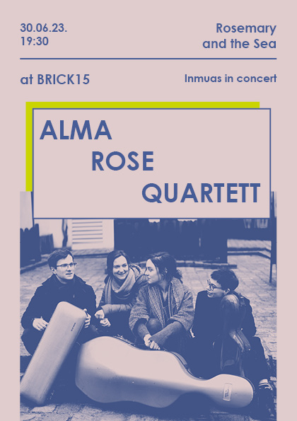
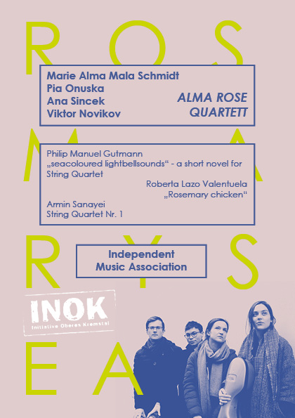
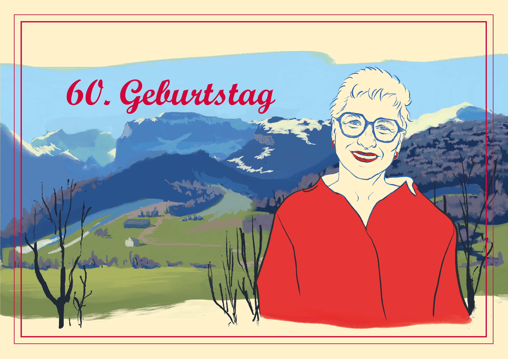
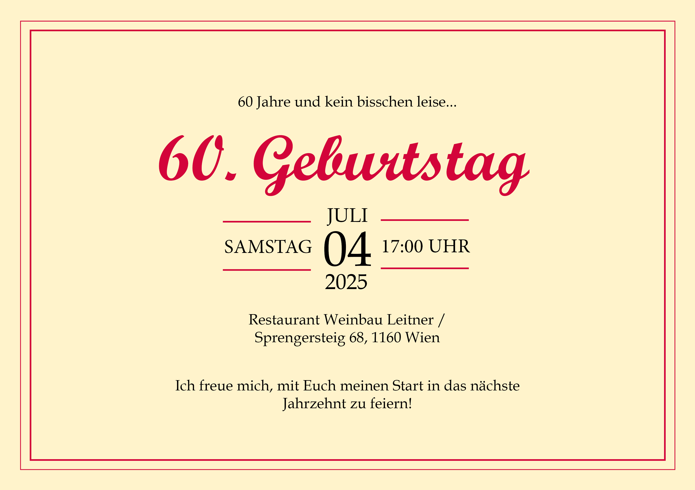

Invitations and Promotion
A selection of invitations and and promotional materials created for private and cultural events.


Alma Rose Quartett
Logo designed for Alma Rosé Quartett as part of a complete visual identity, which also included photography, website design, and printed materials. The logo was developed as my final study project.
Birthday Party
Invitation designed for a birthday celebration. The focus was on creating a cheerful and personal design tailored to the occasion, combining the beloved italian mountains with the porttrait of the client. The design and the illustration are done by me.

